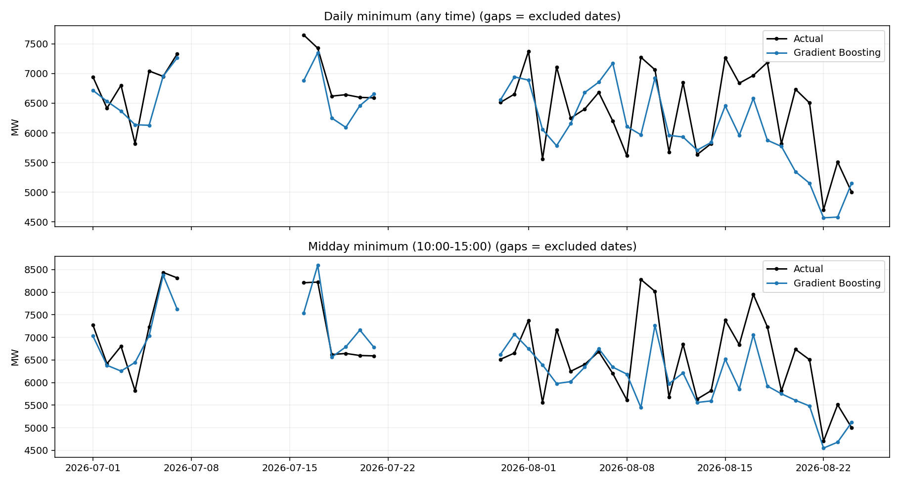

Only Histogram Gradient Boosting, original settings: 300 iterations, learning rate 0.05, seed 42. Both targets use 697 eligible training days before April 2026. No PV inputs. No linear models trained.
Data uses the 90-minute weather fill limit and whole-day exclusion rule. Historical features respect calendar gaps. Actual observed weather is used, not an archived forecast. April-August dates were already inspected in prior experiments. MAE is in MW; lower is better. Evaluation covers retained dates only, so full-period historical scores are not directly comparable.
| Target | Period | Days | MAE_MW | RMSE_MW | Bias_MW | R2 |
|---|---|---|---|---|---|---|
| Daily minimum (any time) | Fixed-window CV, available days | 378 | 493.349 | 639.926 | 50.883 | 0.667 |
| Daily minimum (any time) | April-June | 75 | 327.887 | 415.034 | -42.203 | 0.730 |
| Daily minimum (any time) | July | 15 | 292.705 | 395.755 | -181.118 | 0.179 |
| Daily minimum (any time) | August | 24 | 602.246 | 768.695 | -356.992 | -0.039 |
| Daily minimum (any time) | July-August | 39 | 483.192 | 651.049 | -289.348 | 0.107 |
| Midday minimum (10:00-15:00) | Fixed-window CV, available days | 378 | 670.594 | 854.691 | 150.170 | 0.603 |
| Midday minimum (10:00-15:00) | April-June | 75 | 447.155 | 592.476 | -83.118 | 0.735 |
| Midday minimum (10:00-15:00) | July | 15 | 329.042 | 402.757 | -5.960 | 0.744 |
| Midday minimum (10:00-15:00) | August | 24 | 662.861 | 897.579 | -493.921 | 0.081 |
| Midday minimum (10:00-15:00) | July-August | 39 | 534.469 | 747.110 | -306.244 | 0.362 |
| Target | Fold | Train_days | Window_start | Window_end | Actual_start | Actual_end | Days | MAE_MW | RMSE_MW | Bias_MW | R2 |
|---|---|---|---|---|---|---|---|---|---|---|---|
| Daily minimum (any time) | 1 | 319 | 2024-10-23 | 2025-02-04 | 2025-01-13 | 2025-02-04 | 15 | 340.381 | 505.598 | 196.764 | 0.616 |
| Daily minimum (any time) | 2 | 334 | 2025-02-05 | 2025-05-20 | 2025-02-05 | 2025-05-20 | 80 | 394.679 | 526.659 | 41.649 | 0.474 |
| Daily minimum (any time) | 3 | 414 | 2025-05-21 | 2025-09-02 | 2025-05-21 | 2025-09-02 | 97 | 439.819 | 560.826 | -150.820 | 0.560 |
| Daily minimum (any time) | 4 | 511 | 2025-09-03 | 2025-12-16 | 2025-09-03 | 2025-12-16 | 81 | 648.786 | 788.434 | 374.353 | 0.288 |
| Daily minimum (any time) | 5 | 592 | 2025-12-17 | 2026-03-31 | 2025-12-17 | 2026-03-31 | 105 | 519.921 | 675.474 | -26.122 | 0.596 |
| Midday minimum (10:00-15:00) | 1 | 319 | 2024-10-23 | 2025-02-04 | 2025-01-13 | 2025-02-04 | 15 | 488.387 | 612.316 | 427.419 | 0.634 |
| Midday minimum (10:00-15:00) | 2 | 334 | 2025-02-05 | 2025-05-20 | 2025-02-05 | 2025-05-20 | 80 | 581.773 | 747.093 | 243.788 | 0.398 |
| Midday minimum (10:00-15:00) | 3 | 414 | 2025-05-21 | 2025-09-02 | 2025-05-21 | 2025-09-02 | 97 | 703.268 | 913.155 | -4.260 | 0.444 |
| Midday minimum (10:00-15:00) | 4 | 511 | 2025-09-03 | 2025-12-16 | 2025-09-03 | 2025-12-16 | 81 | 758.325 | 939.448 | 372.494 | 0.261 |
| Midday minimum (10:00-15:00) | 5 | 592 | 2025-12-17 | 2026-03-31 | 2025-12-17 | 2026-03-31 | 105 | 666.434 | 836.552 | 10.393 | 0.570 |

No linear model was rerun. Reference scores are recalculated from saved predictions. Demand targets agree within rounding on matched dates. Training coverage, cleaning and weather source differ; changes cannot be attributed to one cause.
| Reference | Target | Period | Matched_days | Previous_MAE_MW | New_MAE_MW | Improvement_pct |
|---|---|---|---|---|---|---|
| Previous merged-data Gradient Boosting | Daily minimum (any time) | April-June | 75 | 321.287 | 327.887 | -2.054 |
| Previous merged-data Gradient Boosting | Daily minimum (any time) | July | 15 | 311.646 | 292.705 | 6.078 |
| Previous merged-data Gradient Boosting | Daily minimum (any time) | August | 24 | 545.441 | 602.246 | -10.415 |
| Previous merged-data Gradient Boosting | Daily minimum (any time) | July-August | 39 | 455.520 | 483.192 | -6.075 |
| Previous merged-data Gradient Boosting | Midday minimum (10:00-15:00) | April-June | 75 | 435.692 | 447.155 | -2.631 |
| Previous merged-data Gradient Boosting | Midday minimum (10:00-15:00) | July | 15 | 323.727 | 329.042 | -1.642 |
| Previous merged-data Gradient Boosting | Midday minimum (10:00-15:00) | August | 24 | 679.849 | 662.861 | 2.499 |
| Previous merged-data Gradient Boosting | Midday minimum (10:00-15:00) | July-August | 39 | 542.879 | 534.469 | 1.549 |
| Previous merged-data Ridge (saved predictions only) | Daily minimum (any time) | July | 15 | 272.857 | 292.705 | -7.274 |
| Previous merged-data Ridge (saved predictions only) | Daily minimum (any time) | August | 24 | 646.516 | 602.246 | 6.847 |
| Previous merged-data Ridge (saved predictions only) | Daily minimum (any time) | July-August | 39 | 502.801 | 483.192 | 3.900 |
| Previous merged-data Ridge (saved predictions only) | Midday minimum (10:00-15:00) | July | 15 | 346.445 | 329.042 | 5.023 |
| Previous merged-data Ridge (saved predictions only) | Midday minimum (10:00-15:00) | August | 24 | 746.705 | 662.861 | 11.228 |
| Previous merged-data Ridge (saved predictions only) | Midday minimum (10:00-15:00) | July-August | 39 | 592.759 | 534.469 | 9.834 |